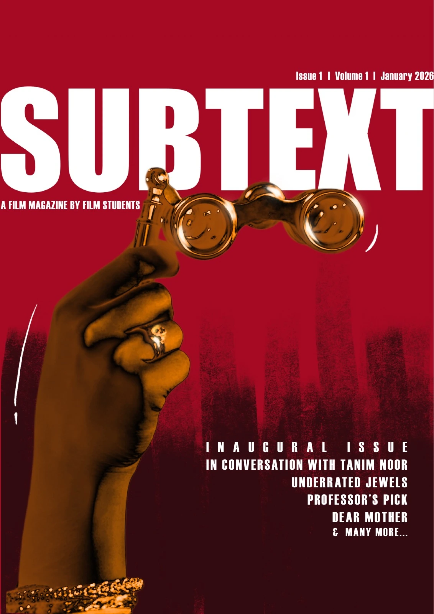
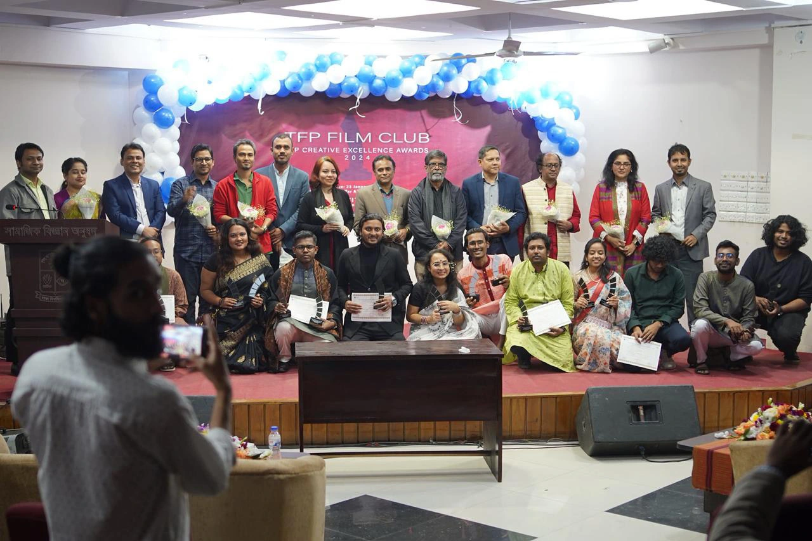

Cinema,
between
the lines.
New perspectives. Unquiet ideas.
A space for the next generation of film voices.

A SMALL MAGAZINE. A WIDER LENS.A beginning, shaped by the voices, ideas, and creative spirit of film students. Welcome to SUBTEXT.
Meet the magazineIn this issue.
Professor’s Pick.
Rezwan Shahriar Sumit
From the inaugural issueFilms that spark curiosity, shift a perspective, and stay with you long after the credits.
The complete selectionA club. A conversation.

THE PEOPLE BEHIND THE PAGESFilm is where we meet.
Screenings, workshops, and conversations. A glimpse of the creative life that makes SUBTEXT possible.
The screen
teaches the screen.
From the edit room to the lighting setup: places to learn, question, and keep looking.
Open the resource directoryA little magazine.
A lot to say.
SUBTEXT is a semiannual film magazine by TFP Film Club, published by the Department of Television, Film and Photography at the University of Dhaka.
Written in English and Bangla, our inaugural issue brings student criticism, conversations with filmmakers, and new ways of looking at the moving image into one shared space.
The magazine & its people- FREQUENCY
- Semiannual
- ISSN
- 3134-7878
- FIRST ISSUE
- January 2026
Have something
to say about cinema?
Essays, observations, and ideas.
Share your writing with the magazine.